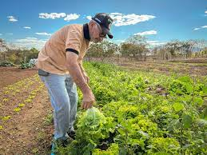

A rotina de um agricultor geralmente começa bem cedo pela manhã, antes mesmo do sol nascer. A primeira tarefa é verificar o clima e as condições do solo, para determinar qual é o melhor momento para iniciar o trabalho no campo. Em seguida, eles podem alimentar os animais, como porcos, vacas e aves, garantindo que eles estejam saudáveis e recebam os cuidados necessários.
A agricultura desempenha um papel vital na sociedade, fornecendo alimentos e matérias-primas essenciais para a subsistência humana. Durante séculos, os agricultores têm desempenhado um papel fundamental no cultivo de culturas, criação de animais e no fornecimento de produtos agrícolas para as comunidades. A rotina de um agricultor é caracterizada pelo trabalho árduo, conhecimento especializado e uma conexão única com a terra. Neste texto, exploraremos a rotina diária de um agricultor, desde o nascer até o pôr do sol, e as responsabilidades que eles enfrentam.
Após cuidar dos animais, o agricultor pode passar para a manutenção dos equipamentos e ferramentas agrícolas. Isso envolve a limpeza, a verificação de óleo, combustível e afiação de lâminas. Assegurar a funcionalidade e segurança dos equipamentos é fundamental para garantir um dia produtivo. Durante o dia: Com o sol subindo no céu, o agricultor se dirige para o campo. Dependendo da estação, eles podem estar envolvidos no plantio de sementes, cultivo de plantas, colheita de frutas ou vegetais, ou cuidando das plantas para garantir o crescimento saudável. Isso requer um conhecimento profundo sobre as características específicas de cada cultura, métodos de irrigação e técnicas de proteção contra pragas e doenças.
Os agricultores também precisam monitorar e gerenciar o sistema de irrigação, garantindo que as plantas recebam a quantidade adequada de água para prosperar. Dependendo das circunstâncias, eles podem precisar fazer ajustes na programação de irrigação ou fazer reparos em tubulações e sistemas de bombeamento. Além das tarefas de cultivo, os agricultores também podem realizar outras atividades, como a manutenção de cercas, construção e reparo de estruturas agrícolas, como celeiros, estábulos e galpões de armazenamento. Eles também podem estar envolvidos na aplicação de fertilizantes, controle de ervas daninhas e preparação de terrenos para o plantio de novas safras. À medida que o sol começa a se pôr, o agricultor conclui suas tarefas no campo. Eles garantem que os animais estejam alimentados e seus abrigos estejam seguros.
A seca traz uma série de consequências negativas para a produção agrícola e a pecuária da região atingida por ela. Algumas delas estão dispostas a seguir.
O primeiro impacto da seca na produção agrícola e pecuária é a redução da produtividade. Isso porque, como você já sabe, o abastecimento de água no talhão é um dos elementos-chave para o crescimento das plantas. A seca reduz essa disponibilidade, o que faz com que elas cresçam menos e apresentem menor qualidade. Pode ser, inclusive, que ocorra a perda de todo um período de produção devido à seca, dependendo da intensidade e da duração do período na região.
Para a pecuária, a situação não é muito diferente. Com a redução das chuvas, o pasto não se desenvolve como deveria, oferecendo um alimento mais escasso e menos nutritivo ao gado. Dessa forma, também há uma redução na produtividade de carnes nos períodos de seca, quando não são bem administrados.
Como era de se esperar, há uma redução na disponibilidade de água durante o período de seca. Isso pode acontecer em diversos níveis, dependendo da intensidade do fenômeno.
Portanto, pode ser que não haja água no solo e a umidade do ar fique muito abaixo do desejado devido à seca, mas sem impactos tão profundos nos reservatórios de abastecimento. Porém, quando a seca dura muito tempo, os reservatórios podem secar, assim como os rios e a água subterrânea. Com isso, a falta de água não afeta apenas as plantações e o gado, mas a população como um todo.
